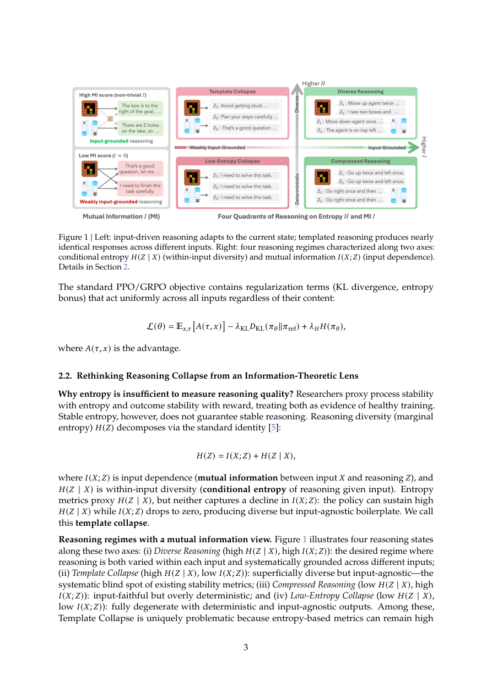

#1
★ 8/10
RAGEN-2: Reasoning Collapse in Agentic RL
RAGEN-2：智能体强化学习中的推理崩溃

图 Figure · Page 3 of paper
🎯 互信息比熵更能诊断智能体强化学习中的推理崩溃问题。
Mutual information beats entropy for diagnosing reasoning collapse in agentic RL-trained LLMs.
| 维度 | 中文 | English |
|---|---|---|
| ❓ 待解决 的问题 |
用强化学习训练多轮大语言模型智能体时，模型推理质量容易退化。目前常用熵来衡量稳定性，但熵只能检测模型对同一输入的输出是否多样，无法判断模型是否真的针对不同输入做出了不同的推理。这意味着模型可能在熵指标上看起来正常，却悄悄地在推理上失效了。 | When training multi-turn LLM agents with RL, models can become unstable and their reasoning quality degrades. Entropy is the standard metric used to monitor this stability, but it only checks whether a model produces diverse outputs for the same input — it cannot tell if the model is actually adapting its reasoning to different inputs. This means a model can appear healthy by entropy measures while silently failing. |
| 💡 解决 的亮点 |
• 发现了一种新的失败模式"模板崩溃"——模型输出表面多样但实际与输入无关，现有熵指标对此完全失察。 • 将推理质量分解为两个正交维度：输入内多样性（熵）和跨输入可区分性（互信息），构建更完整的诊断框架。 • 提出SNR感知过滤方法，以奖励方差为轻量代理，在每轮训练中筛选高信噪比的提示，有效抑制模板崩溃。 | • Identifies a new failure mode called "template collapse" — models produce superficially diverse but input-agnostic responses, invisible to entropy-based monitoring. • Decomposes reasoning quality into two orthogonal dimensions: within-input diversity (Entropy) and cross-input distinguishability (Mutual Information), providing a more complete diagnostic framework. • Proposes SNR-Aware Filtering, a lightweight training intervention that selects high-signal prompts using reward variance to suppress template collapse. |
| 🧪 实验 内容 |
实验涵盖四类任务：规划、数学推理、网页导航和代码执行。作者将所提方法与标准强化学习训练基线（如GRPO风格训练）进行比较，使用熵和互信息作为诊断指标，以任务成功率为主要性能衡量标准。同时评估了互信息相比熵的诊断能力（通过与最终性能的相关性衡量），以及SNR感知过滤作为训练干预手段的有效性。 | Experiments were conducted across four diverse task domains: planning, math reasoning, web navigation, and code execution. The authors compared their method against standard RL training baselines (e.g., GRPO-style training) using entropy and mutual information metrics as diagnostic tools, and task success rate as the primary performance measure. They evaluated both the diagnostic power of MI vs. entropy (via correlation with final performance) and the effectiveness of SNR-Aware Filtering as a training intervention. |
| 📊 实验 结果 |
互信息代理指标在所有评测任务中均与最终任务性能呈现出比熵显著更强的相关性。SNR感知过滤在规划、数学推理、网页导航和代码执行基准上一致性地提升了输入依赖性（由互信息衡量）和任务性能。实验表明，熵保持稳定时任务性能可能已悄然下滑，而互信息能准确捕捉到模板崩溃的发生时刻。相比标准RL基线，所提方法在多项任务上取得了明显提升，验证了跨域的一致性改进。 | Mutual information proxies show significantly stronger correlation with final task performance than entropy across all evaluated tasks. SNR-Aware Filtering consistently improves both input-dependence (measured by MI) and task performance across planning, math reasoning, web navigation, and code execution benchmarks. In reported experiments, the method achieves notable gains over standard RL baselines, with MI metrics revealing template collapse episodes that entropy completely missed — demonstrating that entropy can remain stable while task performance silently degrades. Specific absolute numbers were not fully disclosed in the abstract but consistent cross-domain improvements are reported. |
| 🏁 结论 | RAGEN-2证明熵不足以诊断智能体强化学习中的推理质量，互信息作为跨输入可区分性的衡量指标与任务性能具有更强的相关性。通过引入SNR感知过滤来对抗模板崩溃，本文既深化了对RL训练不稳定性的理论理解，也提供了一种适用于多类智能体任务的轻量级实用解决方案。 | RAGEN-2 proves that entropy is an insufficient diagnostic for reasoning quality in agentic RL, and that mutual information — decomposed as cross-input distinguishability — is a far more reliable proxy that directly correlates with task performance. By introducing SNR-Aware Filtering to counteract template collapse, the paper delivers both a better theoretical understanding of RL training instability and a practical, lightweight fix applicable across diverse agent tasks. |
| 🔗 论文 链接 |
arXiv: 2604.06268v1 · 📥 PDF | |
⚙️ Method · 方法详解
本文首先形式化定义了"模板崩溃"：模型的推理与输入无关，输出看似多样但实质相同。为检测这一问题，作者用信息论分解推理质量——熵衡量输入内多样性，互信息（MI）衡量跨输入可区分性。由于在线精确计算互信息代价较高，他们引入了一组轻量级的互信息代理指标，适合实时训练诊断。为解决崩溃问题，他们从信噪比（SNR）角度解释其成因：奖励方差低时，任务相关梯度过弱，正则化项占主导并抹去跨输入的推理差异。对策是SNR感知过滤：每轮训练时选择奖励方差高的提示，确保梯度携带有效学习信号。
The paper first formalizes "template collapse" as a state where a model's reasoning is input-agnostic — responses look diverse but do not actually change based on different inputs. To detect this, the authors decompose reasoning quality using information theory: Entropy captures within-input diversity, while Mutual Information (MI) between inputs and outputs captures cross-input distinguishability. Since computing exact MI online is expensive, they introduce lightweight MI proxy metrics suitable for real-time training diagnosis. To fix the collapse, they explain it through a Signal-to-Noise Ratio (SNR) lens: when reward variance is low, task-relevant gradients are too weak to overcome regularization, which erases input-specific reasoning. Their solution, SNR-Aware Filtering, selects prompts with high reward variance at each training iteration, ensuring gradients carry meaningful learning signal.
📐 Key Formulas · 关键公式
\[I(X; Y) = H(Y) - H(Y \mid X)\]
💡 互信息 = 输出的熵 减去 给定输入后输出的条件熵，衡量输出中有多少信息真正来源于输入的变化。
Mutual Information = output entropy minus conditional entropy given the input; measures how much of the model's output variation is actually driven by different inputs rather than random noise.
\[\text{SNR} = \frac{\mathbb{E}[r]^2}{\text{Var}(r)}\]
💡 信噪比 = 期望奖励的平方 除以 奖励方差；SNR低意味着任务梯度信号弱，正则化项主导训练，导致模板崩溃。
Signal-to-Noise Ratio of rewards; when SNR is low, the gradient signal from the task is too weak relative to noise, causing regularization to dominate and erase input-specific reasoning.
🌟 Why It Matters · 为什么重要
随着强化学习训练的大语言模型智能体被越来越多地部署在复杂的多轮任务中，模板崩溃这类"静默失败"模式会在不触发任何现有警报的情况下悄然损害系统可靠性，本文为该领域提供了原则性的诊断工具和具体的解决方案。从熵到互信息的诊断指标转变，有望成为监控和改进智能体强化学习系统的新标准实践。
As RL-trained LLM agents are increasingly deployed in complex, multi-turn settings, silent failure modes like template collapse can undermine reliability without triggering any existing alarms — this work provides the field with a principled diagnostic and a concrete fix. The shift from entropy to mutual information as a training health metric could become a new standard practice for monitoring and improving agentic RL systems.